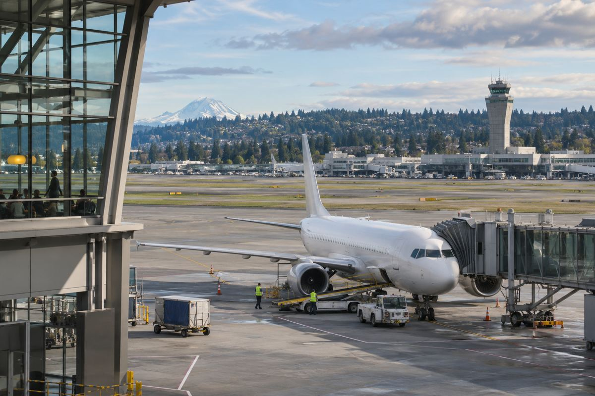

항공 / EXPLAINED
알래스카항공, 시애틀 직항 5개 추가…과달라하라는 3월부터
미국 국내선 4개는 매일 연중 운항하고, 멕시코 노선은 주 3회 시즌편이다.

시애틀을 거쳐 미국 남부나 멕시코에 갈 계획이라면, 도시 이름 옆에 첫 운항일을 같이 적어두세요. 알래스카항공이 11월 12일 판매를 시작한 2027년 직항 다섯 편의 출발 시기가 제각각이에요. 새 노선을 더하면 회사 기준으로 시애틀 직항 목적지는 119곳이 된다고 해요.
샬럿과 노퍽은 6월 10일, 두 도시는 2주 뒤예요
노스캐롤라이나주 샬럿(CLT)과 버지니아주 노퍽(ORF)은 6월 10일부터, 플로리다주 잭슨빌(JAX)과 아이오와주 디모인(DSM)은 6월 24일부터예요. 네 노선 모두 연중 매일 운항할 계획이에요. 6월 중순 잭슨빌 여행을 잡고 있다면 직항이 발표됐다는 소식만 보고 표를 찾기보다, 개시일과 도시 코드를 먼저 맞춰 보는 게 빠르겠죠.
멕시코 과달라하라(GDL)는 일정이 달라요. 3월 18일부터 8월 9일까지 보잉 737로 주 3회 운항할 예정이에요. 시애틀에서 현지 밤 11시 15분에 떠나 다음 날 오전 5시 11분에 도착하고, 반대 방향 첫 편은 3월 19일이에요. 새벽에 내리면 호텔 체크인까지 시간이 많이 남을 수 있어요. 시즌 끝 무렵에 가는 분은 돌아오는 날에도 편이 있는지 같이 검색해 보세요.
한국에서 시애틀을 거쳐 새 노선을 타려는 분도 있겠죠. 미국에 처음 들어오는 공항에서 입국 절차를 밟고 짐과 터미널을 확인할 시간까지 잡아야 해요. 오후에 시작하는 행사나 업무가 있다면 공항 도착 시각만 봐서는 빠듯할 수도 있어요. 지금 공개된 건 회사의 운항 계획과 판매 일정이니, 실제 예매 화면에서 양쪽 편의 요일과 시간을 맞춰 보세요.